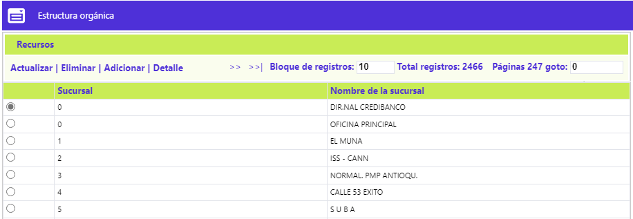
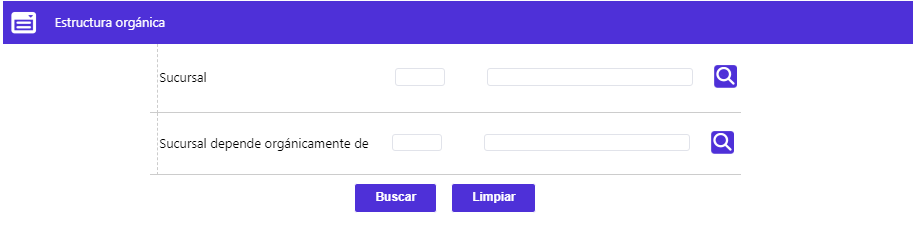
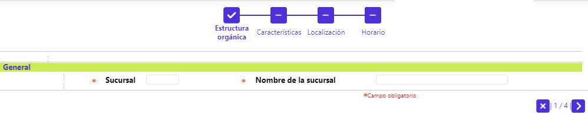
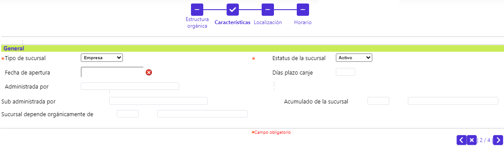
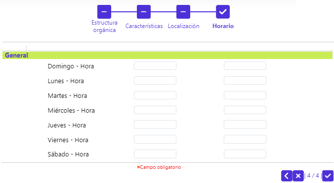
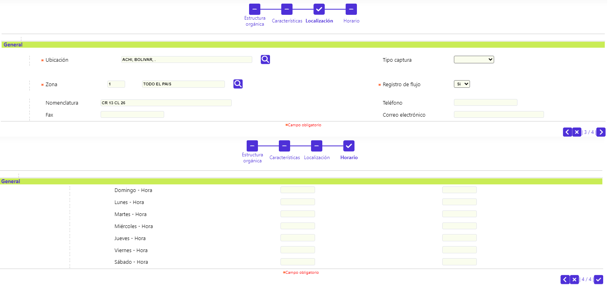
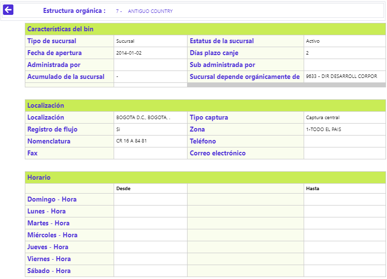

Estructura organica
Mediante esta función se habilita la consulta y mantenimiento de la tabla en la cual, se almacena la información más relevante sobre la jerarquía administrativa y/o funcional, la dependencia de las sucursales, oficinas, agencias u otros puntos físico que componen la entidad, la cual es posible descomponer o recomponer en cascada, mediante los botones especiales y gracias a la flexibilidad de la forma, permite la inclusión de diversas clases de estructuras. El formulario contiene los enlaces: Actualizar, Eliminar, Adicionar y Detalle. Adicionalmente, cuenta con un filtro de búsqueda y el enlace Recursos.

Filtro: Se pueden realizar consultas a través de las siguientes opciones:

|
Sucursal |
Campo numérico con lista de valores de cuatro dígitos, en el cual se registra el código una dependencia de la entidad. |
|
Sucursal depende orgánicamente de |
Campo numérico con lista de valores de cuatro dígitos, en el cual se registra el código una dependencia de la entidad. |
Adicionar: Al activar ese enlace se despliega un wizard de cuatro pasos con los siguientes formularios.
General: Dupla de campos en los que se registra la información básica de cada sucursal a definir o crear.

|
Sucursal |
Campo numérico de cuatro dígitos, obligatorio, en el cual se registra el código único que identifica y diferencia cada dependencia de la entidad. La asignación de códigos debe ser ascendente y acorde a la jerarquía de la entidad y es indispensable incluir a la misma entidad con el código cero, puesto que la opción Calendario así lo requiere para poder heredar los días inhábiles y festivos, tanto de la entidad como de la corporación a la que pertenece la entidad, en caso de aplicar esta figura. |
|
Nombre de la sucursal |
Campo alfanumérico de 30 posiciones, en el cual se debe registrar el nombre asignado a cada dependencia de la entidad. |
Mediante los botones ubicados en la parte inferior derecha del formulario, el usuario tiene la opción de: Retroceder, Cancelar el ingreso del registro o Avanzar al siguiente paso del wizard.
Características: Conjunto de campos en los que se registra información adicional de la sucursal que se está definiendo o creando.

|
Tipo de sucursal |
Campo que posee lista de valores tipo combo de la cual se debe seleccionar el nivel o jerarquía administrativo/operativo que detenta la dependencia y que puede ser Agencia, Sucursal, Oficina, Empresa, Departamental o Regional. |
|
Estatus de la sucursal |
En este campo con lista de valores adjunta, se selecciona la condición actual de la dependencia que puede ser Activo, Inactivo o Suspensión. |
|
Fecha de apertura |
Campo no obligatorio, en el que mediante funcionalidad calendario, permite indicar la fecha en la cual ocurrió la apertura oficial de la sucursal o dependencia. |
|
Días plazo canje |
Campo numérico de dos dígitos, no obligatorio en el que se registra el número máximo de días hábiles que requiere la operación del canje interbancario. |
|
Administrada por |
En este campo alfanumérico de 30 posiciones, no obligatorio, se puede digitar el nombre del administrador, gerente o persona responsable de la sucursal o dependencia de la entidad. |
|
Sub administrada por |
Campo alfanumérico de 30 posiciones, no obligatorio, dentro del que se puede registrar el nombre del subadministrador, subgerente o asistente de la persona responsable de la sucursal o dependencia de la entidad. |
|
Acumulado de la sucursal |
Campo no obligatorio, se puede seleccionar de la lista de valores, poblada a través de esta misma pantalla, el código de una sucursal que cobije a una o más oficinas de nivel inferior, para efectos de evaluación del logro de las metas por oficina propuestas. |
|
Sucursal depende orgánicamente de |
Campo no obligatorio, contiene lista de valores codificada con las diversas áreas, secciones o sucursales de la entidad, poblada para establecer la relación de dependencia orgánica o funcional entre los entes de la misma empresa. Las oficinas que no sean incluidas dentro de la cadena de dependencia con la entidad no heredarán el calendario de ésta. |
Localización: Mediante este grupo de campos se definen los datos básicos tanto de localización como de contacto de la sucursal u oficina de la entidad.
|
Ubicación |
Campo obligatorio, que posee lista de valores poblada en la opción Entidades territoriales, de la que debe seleccionarse la ciudad (municipio), departamento y país (o la división geopolítica que rija para cada país), en que se encuentra radicada la sucursal o dependencia de la entidad. |
|
Tipo captura |
Este campo diseñado para uso futuro, no obligatorio, posee lista de valores adjunta, poblada en la opción Parámetros de captura, de la cual se puede seleccionar la opción que determina la manera como cada oficina capturará su movimiento. |
|
Zona |
Campo obligatorio, que contiene lista de valores poblada en la opción Zona geográfica, de la que debe aquella de la cual depende operativa o administrativamente la sucursal o agencia. |
|
Registro de flujo |
Campo obligatorio que posee lista de valores tipo combo, de la cual debe seleccionar entre Sí o No le es permitida la captura de movimiento a esa sucursal u agencia, lo cual se reflejará en el momento de interactuar con la opción Captura movimiento oficinas. |
|
Nomenclatura |
Campo alfanumérico de 40 posiciones, no obligatorio, en el que se ingresa la dirección de la sucursal o dependencia de la entidad. |
|
Teléfono |
Campo alfanumérico de 20 posiciones, no obligatorio, en el que se registra el número telefónico de la sucursal o dependencia de la entidad. |
|
Fax |
Campo alfanumérico de 20 posiciones, no obligatorio, si aplica, puede contener el número del fax de la sucursal o dependencia de la entidad. |
|
Correo electrónico |
Campo alfanumérico de 30 posiciones, no obligatorio, en el que se registra la dirección para el envío de correo electrónico a la sucursal o dependencia de la entidad. |
Horario: Cuanto y último paso del wizard, en este formulario se define el horario de atención al público para cada uno de los siete días de la semana.

|
(Día de la semana) |
Campo en el que aparece por defecto el nombre de cada uno de los días de la semana. |
|
(Desde) |
En este campo no obligatorio, en formato de HH:MM, se puede registrar el horario en que se inicia el servicio al público. |
|
(Hasta) |
En este campo no obligatorio, en formato de HH:MM, se puede registrar el horario de cierre o hasta el que se presta el servicio. |
Actualizar:Al invocar ese enlace, el sistema muestra el formulario del primero de los cuatro pasos del wizard, en los que son posibles de modificar los siguientes campos: Nombre de la sucursal, Tipo de sucursal, Estatus de la sucursal, Fecha de apertura, Días plazo canje, Administrada por, Sub administrada por, Acumulado de la sucursal, Sucursal depende organicamente de, Ubicación, Tipo Captura, Zona, Registro de flujo, Nomenclatura, Teléfono, Fax, Correo electrónico y los horarios (desde-hasta) de Domingo a Sabado.

Detalle: Si el usuario invoca la opción Detalle se despliega el siguiente formulario:

Recursos: Al invocar ese enlace, el sistema muestra el siguiente formulario, en el cual se relacionan los activos físicos o recursos con que cuenta la sucursal o dependencia de la entidad, para efectos de control o inventario, entre otros. Además de disponer del botón de la parte superior izquierda para regresar a la opción Estructura Orgánica , contiene los enlaces: Actualizar, Eliminar y Adicionar.
Adicionar: Al invocar ese enlace se despliega el siguiente formulario:
|
Código de inventario |
Campo alfanumérico de 20 posiciones, obligatorio, en el que se ingresa el número o código de inventario que identifica cada uno de los activos físicos. |
|
Descripción |
Campo alfanumérico de 20 posiciones, obligatorio, en el que se ingresa el número o código de inventario que identifica cada uno de los activos físicos. |
|
Número de serie |
Campo alfanumérico de 20 posiciones, no obligatorio, en el que se registra el número de serie de fabricación que permite una mejor identificación de los activos físicos. |
Actualizar: Al activar ese enlace se despliega un formulario en el cual los únicos campos modificables son: Descripción y Número de serie.